51 单片机：一个 8 键电子琴是如何运作的
文章目录
本文以 STC12C2052AD 单片机为例讲解一个 8 键电子琴的程序是如何运作的，程序使用 Keil4 软件 C 语言编程。
Tip
本文中的工程项目可在 https://github.com/GeoKylin/8KeyMCU51 中查看。
材料清单
硬件：
| 元件 | 型号 | 数量 |
|---|---|---|
| 面包板 | 2.54 mm 间距 | 1 |
| 电池盒 | 3 节 5 号 | 1 |
| 单片机 | STC12C2052AD | 1 |
| 晶振 | 12 MHz | 1 |
| 电容 | 30 pF | 2 |
| 扬声器 | 5 V | 1 |
| 电阻 | 100 | 8 |
| 微动开关 | 6 mm * 6 mm * 5 mm | 8 |
软件：
| 名称 | 开发公司 | 描述 |
|---|---|---|
| Keil4 | Keil Software | 51 系列兼容单片机 C 语言软件开发系统 |
| STC-ISP | 宏晶科技有限公司 | 单片机下载编程烧录软件 |
电路原理图
电路原理图：
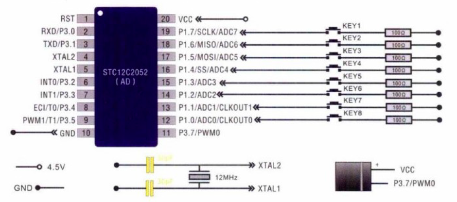实际连接图：
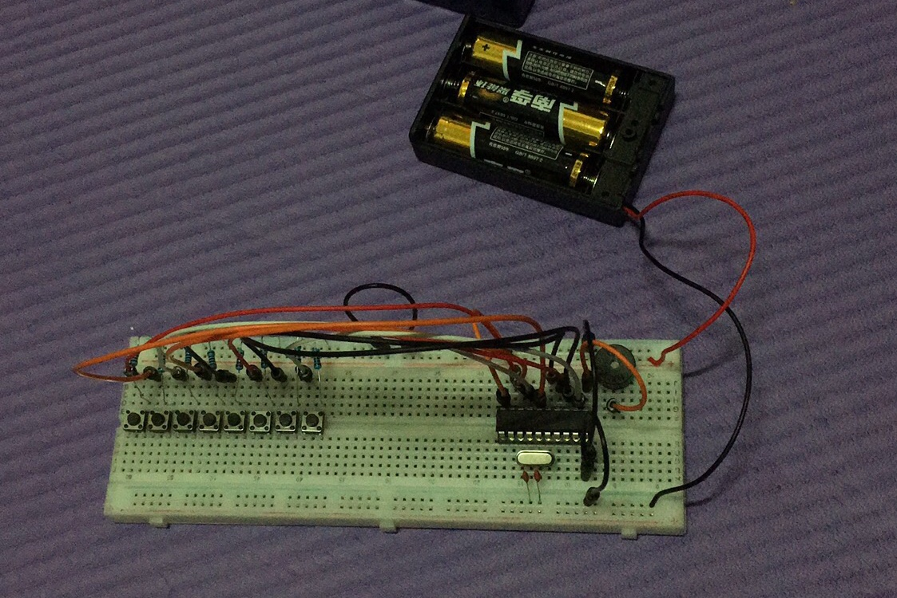C 程序代码
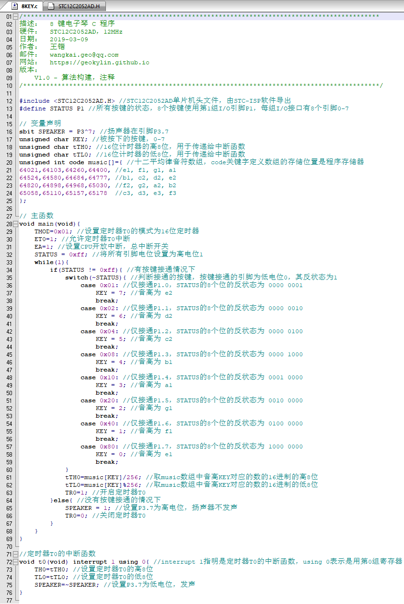程序是如何运行的
|
|
引用 STC12C2052AD.H 头文件，它是由 STC-ISP 软件导出的、用于 STC12C2052AD 单片机的头文件，其内容是定义一系列 SFR (Special Function Register，特殊功能寄存器) 的地址，下文会再次提及。
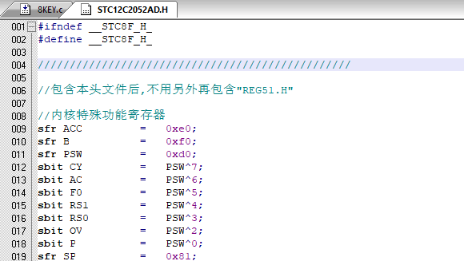特殊功能寄存器，是 51 单片机中各功能部件对应的寄存器，用于存放相应功能部件的控制命令，状态或数据，下文会再次提及。
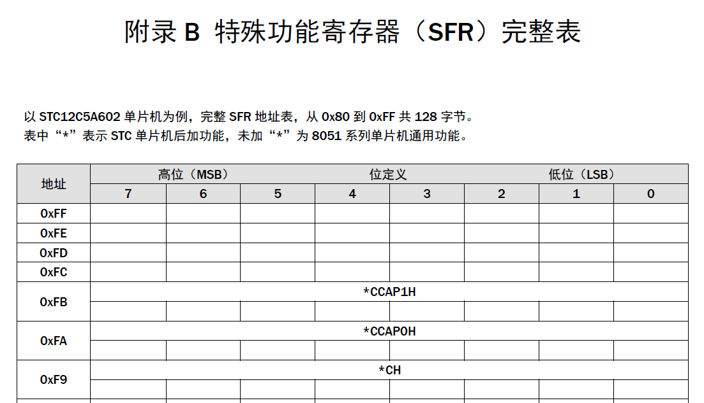
|
|
定义 STATUS 来表示第 1 组 I/O 引脚 P1 的状态，这组引脚共有 8 个，从 P1.0 到 P1.7，P1 在 SFR 表中的地址为 0x90 (0x 表示 16 进制数)，指向 1 个字节，该字节中的 8 位分别由低到高分别是 P1.0 到 P1.7 引脚的电位高低，高电位为 1，低电位为 0。
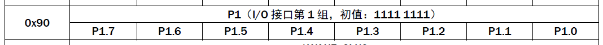
|
|
扬声器所在的引脚是 P3.7，sbit 是按位寻址的变量类型，指向第 3 组 I/O 引脚 P3 的第 8 位，与 P1 相似，P3 在 SFR 表中的地址为 0xB0，^ 是按位异或运算符，进行运算的两个数对应二进制位相同时值为 0，不同时值为 1。0xB0 的二进制表示是 1011 0000，7 的二进制表示是 0000 0111，因此 P3^7 = 0xB0^7 = 1011 0111 = 0xB7。
|
|
music 数组用于控制蜂鸣器发出声音的频率。STC12C2052AD 单片机的 P3.7 引脚又称 PWM0，可以用来输出调制电波，它通过定时器来实现。对于 16 位定时器，它可以存放的最大整数为 65535，给定一个定时器的初值 N，它会累加到 65535，然后将输入到 PWM 引脚的电流反相，如此反复来达到输出调制电波的需求。而对于本电路使用的 12MHz 晶振来说，它的机器周期为 1us (12 个震荡周期)。因此电流的半周期为 T/2 = (65535 - N)*1us，电流的周期为 T = 2*(65535 - N)*1us，频率为 F = 1/T = 1/(2*(65535 - N))MHz = 500000/(65535 - N)Hz。因此，对于给定音高的频率 F (单位为 Hz)，它的定时器初值应该为 N = 65535 - 500000/F。为此我们查找十二平均律音高与频率对照表，可以得到各个音高的频率，于是就可以计算得到上面给出的 music 数组。例如定时器的初值为 64021，它对应的扬声器的频率为 500000/(65535 - 64021) = 330Hz，它发出的音高是 e1。
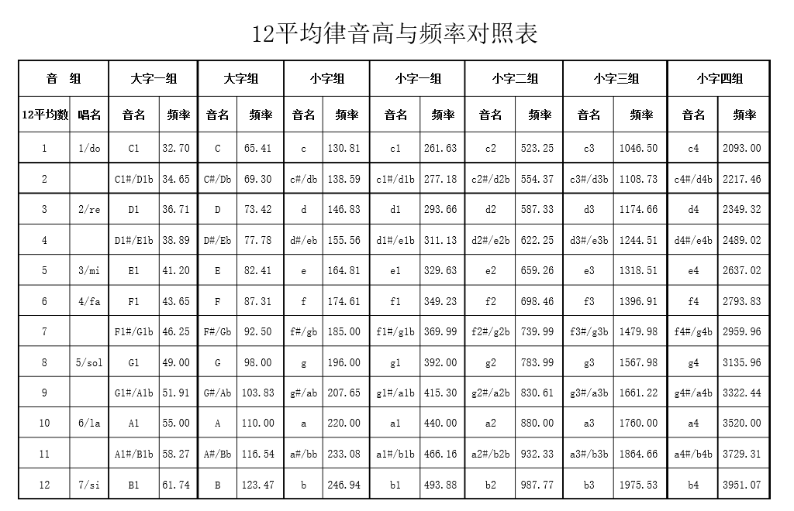
|
|
TMOD 在 SFR 表中的地址为 0x89，它的 8 个位用于设置定时器的定时方式，高 4 位用于设置定时器 T1，低 4 位用于设置定时器 T0，这里的设置为 TMOD = 0x01 = 0000 0001。具体设置如下：GATE 为门控制（GATE = 0 时，TR0 = 0 时则启动定时器 T0，下文会提及），C/T 为功能选择（C/T = 0 时启用定时功能，C/T = 1 时启用计数功能），M1 和 M0 共同设置定时器的工作方式（共有四种方式，其中 M1 = 0，M0 = 1 时启用 16 位定时器）。
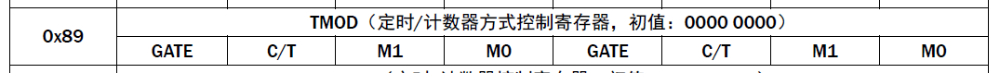
|
|
EA 和 ET0 分别为 SFR 表中 IE (中断控制寄存器)的第 8 位和第 2 位，ET0 = 1 时允许定时器 T0 中断，EA = 1 时 CPU 开放中断，相当于一个总开关，它是允许定时器 T0 中断的前提。
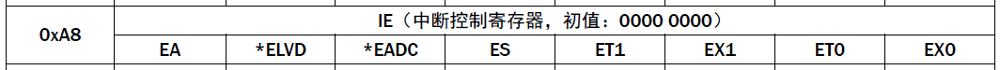
|
|
因为 0xff = 1111 1111，所以这一句的含义是将 P1.0 到 P1.7 八个引脚设置为高电位。从电路图上来看，当有一个按键按下时，对应的引脚将和地线 GND 接通，此时该引脚被强制变为低电位，由于 CPU 和定时器 T0 的中断允许已经开启，因此这种高低电位的变化将会引起定时器 T0 的中断，也就是调用 T0 的中断函数。
|
|
当有按键被按下的时候，8 个引脚的状态将不再是 1111 1111，这时我们需要判断是哪一个按键被按下，然后调用音符数组中对应的声音频率的定时器初值就可以了。例如当 P1.3 引脚对应的按键被按下时，STATUS = 1111 0111，那么它的反状态就是 0000 1000 = 0x08，这时我们取音符数组中的下标为 4 的音符，也就是 b1 音。以此类推，P1.0 到 P1.7 引脚的按键对应的音高分别是 e2、d2、c2、b1、a1、g1、f1 和 e1。
|
|
这里的 tTH0 是将 music 数组中的元素除以 256 取整，相当于取定时器初值的高 8 位。这时因为单片机寄存器是 8 位的，而定时器用的是 16 位的，因此需要把定时器的高 8 位和低 8 位单独存放到一个寄存器地址，而 256 = 2^8，因此 tTH0 表示的是定时器初值的高 8 位。同理，tTL0 是将 music 数组中的元素除以 256 取余，因此它表示的是定时器初值的低 8 位。
|
|
TR0 是 SFR 表中 TCON（定时器控制寄存器）第 5 位，TR0 = 1 时将启动定时器，TR0 = 0 时关闭定时器。
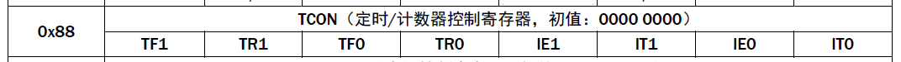
|
|
当没有按键被按下的时候关闭扬声器和定时器 T0，因为扬声器的正极连接在 VCC 上，因此是高电位，所以当 SPEAKER = 1 时，扬声器负极引脚也为高电位，此时扬声器中没有电流通过，因此扬声器不会发出声音。
|
|
这是定时器 T0 的中断函数，interrupt 1 是指该函数是定时器 T0 的中断函数，using 0 是指用的是第 0 组寄存器即 TH0 和 TL0。
|
|
TH0 和 TL0 在 SFR 表中的地址分别为 0x8C 和 0x8A，分别用于存放定时器 T0 初值的高 8 位和低 8 位。
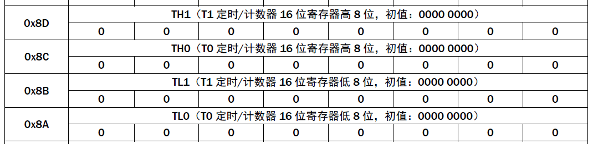
|
|
这一句是让扬声器发出声音，因为在没有按键按下的时候，P3.7 引脚始终被设置为高电位，即 SPEAKER = 1，因此它的反状态为 0，也即低电位，此时扬声器正负极间存在高低电位差，扬声器将发出声音，而声音的频率则由 TH0 和 TL0 来决定。
|
|